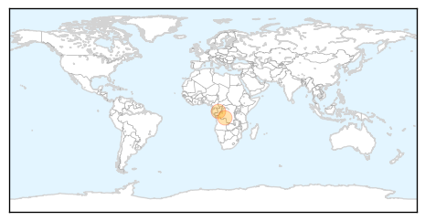
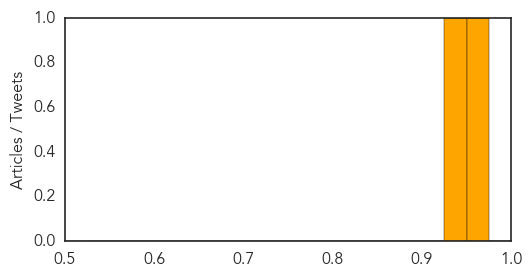
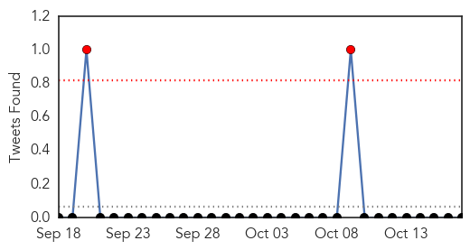
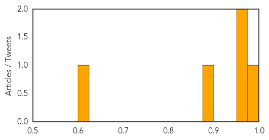

Measles
30-Day Web Trend
1 alerts, 0 warnings
30-Day Twitter Trend
0 alerts, 0 warnings

Article Locations
Article Confidences
Top Articles:
Top Tweets:
-
No tweets found for Oct 17, 2015
Dengue Fever
30-Day Web Trend
0 alerts, 2 warnings

30-Day Twitter Trend
2 alerts, 0 warnings

Article Locations

Article Confidences
Top Articles:
- 0.997
- India Faces Worst Dengue Outbreak In 20 Years As Cases Reach 12,000
- 0.955
- Sting operation of dengue by Chandigarh health department
- 0.955
- SGGP English Edition- Health Ministry launch campaign to kill larve in Binh Duong
- 0.899
- 17.10.05 Dengue Free City campaign launched in Trinco
- 0.619
- Civil Hospital becomes stifling, smelling mess
Top Tweets:
-
No tweets found for Oct 17, 2015